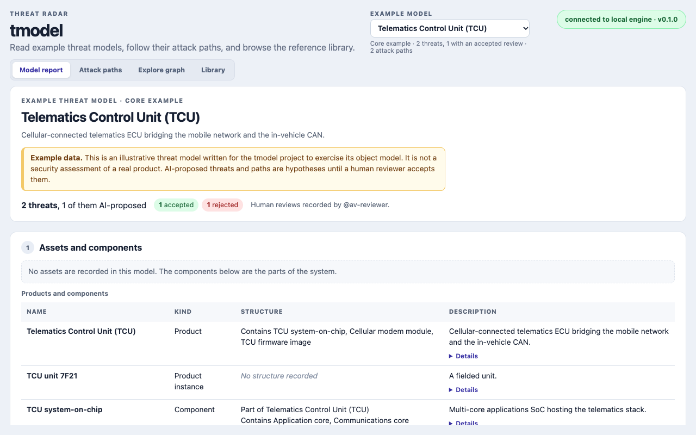
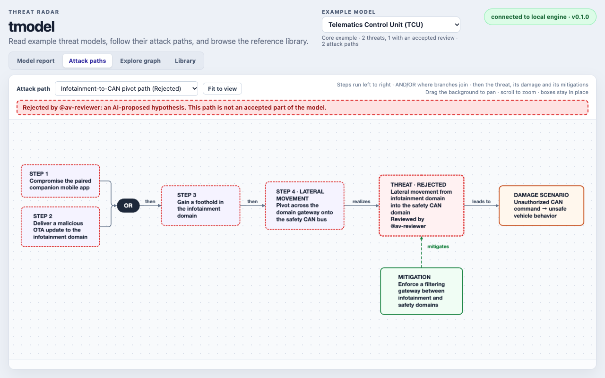
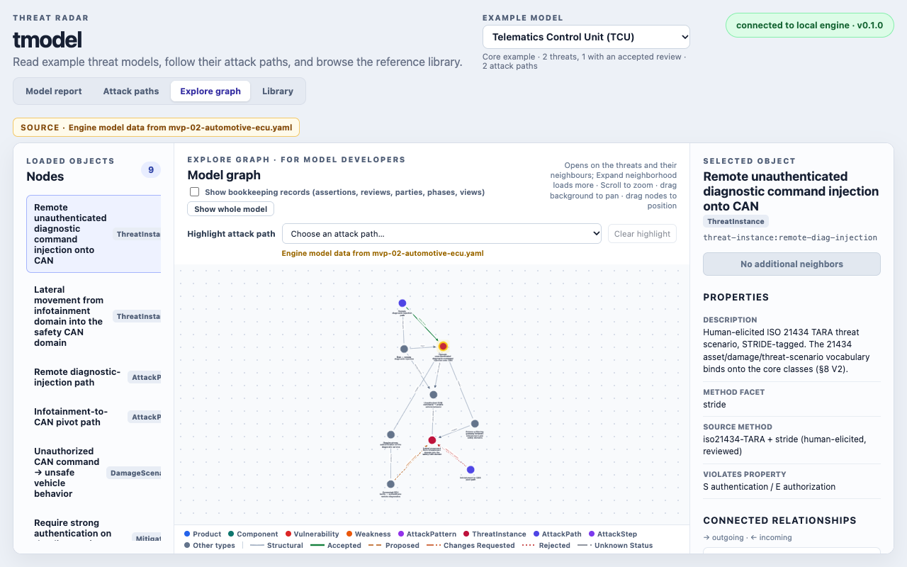

Interactive browser preview
Open every example model in the app without installing anything. Switch models and use the report, attack-path, graph and reference-library views with published read-only data.
Try the app →Threat-Radar
tmodel builds a threat model as a knowledge graph: products and components, weaknesses, threats, attack paths, damage scenarios and mitigations. Anything an assistant proposes stays a hypothesis until a person accepts it, and every view shows which is which.
The desktop app with the automotive example, a telematics control unit, loaded. The same report renderer writes the example pages on this site.



Everything below is published from the repository and regenerated from its sources. All of it is readable without installing anything.
Open every example model in the app without installing anything. Switch models and use the report, attack-path, graph and reference-library views with published read-only data.
Try the app →One page per example model: components, damage scenarios, threats, attack paths, mitigations, risk and requirements, as tables. Every threat and path carries its review status.
Browse the example models →The telematics example laid out in ISO/SAE 21434 clause 15 order: assets and damage scenarios, impact ratings, threat scenarios, attack feasibility, risk values and a treatment decision per risk. Example data; standard text is paraphrased.
Read the TARA draft →The reviewed research behind the design, such as the secure development lifecycle report and its object model. Each page states its revision and date.
Read the reports →The standards, papers and vendor specifications the models and reports cite, each with a summary page. Browse by topic, type or publishing body, or use the crosswalk.
Open the bibliography →tmodel's own SDL as an example: the requirement sets it could follow, the practices it has done, has in progress or lacks, and the evidence for each. Every selection waits for a human decision.
Read the SDL page →Every page here is generated from YAML files in the repository, checked against the project's LinkML schema. Read them, or load them into the engine yourself.
Browse the YAML →All eight examples, as the app's model picker lists them. Each was written to exercise the object model, so none is a security assessment. The proposal examples are AI drafts from published write-ups of real attacks, and name the real products.
| Model | What it shows | Review |
|---|---|---|
| Core examples | ||
| Telematics Control Unit (TCU) | An automotive ECU bridging the cellular network and the in-vehicle CAN. A reviewer accepted one threat and rejected the other. The TARA draft is built from it. | acceptedrejected |
| Papermill Document Service | The same model shape in a second domain: an open-source document-rendering microservice. | acceptedchanges requested |
| Connected-Vehicle System | A system built from subsystems, an in-vehicle platform and a cloud backend, composed level by level. | changes requestednot reviewed |
| Crypto Server Appliance and Edge Sensor | One vulnerable chip in two products: one is affected, the other is not, and a VEX statement records why. | changes requestednot reviewed |
| Worked examples with governance | ||
| Brake ECU | A safety-critical brake ECU: a physical glitching attack beside the software one, a lifecycle phase, and a governed snapshot of the threat model. | not reviewed |
| Acme Auth Service | The same governance in software: an open-source authentication and token-refresh service. | changes requestednot reviewed |
| Proposal examples (AI-drafted, unreviewed) | ||
| Toyota RAV4 (2021): CAN injection theft | Keyless car theft by injecting messages onto the CAN bus, drafted by AI from the published write-up of the attack. | not reviewed |
| Kia vehicle with remote services | Theft of owners' private data through a dealer web portal, drafted by AI from the published write-up of the attack. | not reviewed |
There is no stable release yet. You can run a development build on a Mac, or build from source anywhere.
Rebuilt whenever the app or engine changes on main. macOS blocks the first launch: open System Settings › Privacy & Security and click Open Anyway.
Download for macOS (.dmg)Linux and Windows builds are not published yet, and Windows is untested. The engine and the app run from a checkout in a few minutes; the steps are below.
Build from sourceThe local engine and the app in a browser tab, with no Rust or native build. The engine listens on 127.0.0.1 only. In a first terminal:
git clone --recurse-submodules https://github.com/Threat-Radar/tmodel
cd tmodel
python3.13 -m venv engine/.venv
engine/.venv/bin/python -m pip install -e ./engine
(cd apps/desktop && npm ci)
engine/.venv/bin/tmodel serveLeave it running. In a second terminal, from the same folder, start the app and open http://localhost:1420/:
(cd apps/desktop && npm run dev)
# or list attack paths in the terminal
engine/.venv/bin/tmodel paths spec/vectors/mvp-02-automotive-ecu.yamltmodel tracks vulnerabilities, threats, weaknesses, assets, attack paths and mitigations as linked, reviewable nodes, then maps generic threats onto products over a design lifecycle.
An attack path from a model or an assistant is a hypothesis until a person with domain knowledge accepts it. Review and annotation are part of the product, not a later export.
The architecture and open decisions live in the repository, not on this page.